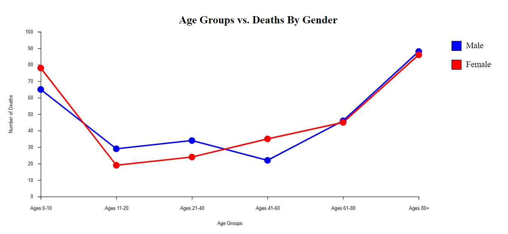
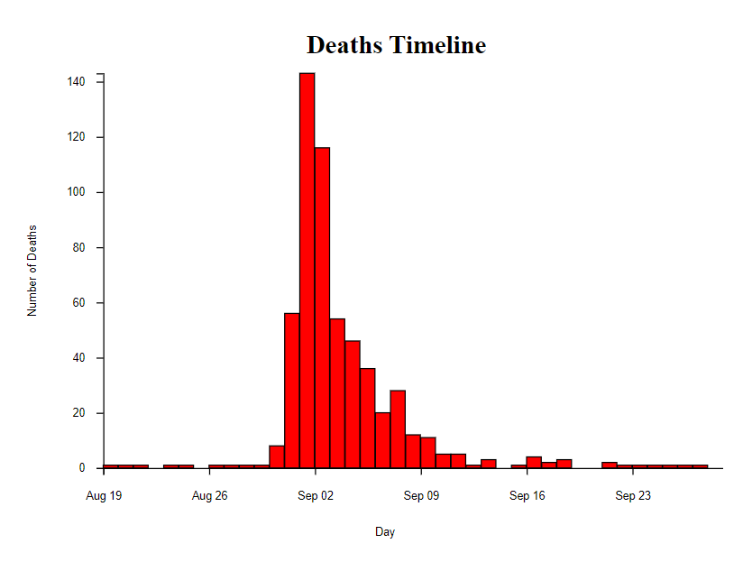

The first step in the design process was to display the map with the pumps and deaths displayed in the right spots. After getting this done, I had to decide how to indicate the pumps and deaths and distinguish between the male deaths and the female deaths as well as the different age groups. I distinguished the male and female deaths using color by making male deaths blue and female deaths red. I then chose to distinguish the age groups using opacity. The younger they victims were the more solid the colored circle would be. Later on in the design process, I realized that this was not the clearest way to represent the ages so I made use of tooltips which would display the age group and gender when the victim death was hovered over. At the end of the design process, I added in the street names that I felt were the most important considering number of deaths or locations of pumps. Therefore, I labeled Broad Street, Silver Street, Brewer Street and Oxford Street.
After the map, I had to plot the timeline which displays the deaths of the victims over time. Initially I made it a line graph but eventually changed it to a bar chart. After plotting the axes and bars, I made use of the tooltips again by having it display the date and the number of deaths on the day to clearly be able to see how many deaths occurred on what day.
Finally, I plotted one more graph which displayed the number of deaths over the different age groups and broke them up by male and female to show how the deaths progressed with age and how different the paths were for males and females.
When it comes to the pumps on the map, I chose to represent them as somewhat bigger bright yellow circles with black outlines. I chose this because I felt that this is what would make them stand out the most. It would be easy to see where the pumps were located even if they were covered up by a lot of victim deaths. I chose to distinguish the male and female deaths by two opposite colors because this would be the best way to see where the female deaths were and where the male deaths were. If I chose to distinguish them by shape or size, it would have not been as clear. Initially, I chose to distinguish age groups by just opacity. I later realized this wasn’t going to be enough. Despite the death circles having varying opacities, it was still hard to tell which age group the victim was in. Therefore, I added in tooltips. When the user hovers over a death, it displays the gender and the age group of the victim very clearly. I chose to leave the opacity levels so that even without hovering over the deaths, the user would be able to get a general idea of where older or younger victim deaths were located. I chose to label Broad Street since that is where a lot of the deaths occurred, and a pump was also located there. I chose to label silver street because many deaths occurred there as well and Brewer Street because two pumps were located there. Finally, I labeled Oxford Street because of it’s proximity to a chunk of the pumps.
When choosing how to draw the timeline, I initially chose a line graph because I felt it would best display the deaths over time. However, I changed this to a bar graph because I felt it would be the best way to indicate the number of deaths for each individual day. This, in my opinion, would make determining the day with the maximum number of deaths and so on. I added on to this by adding a tooltip for each bar to indicate the number of deaths for each day.
After this, I attempted to add interaction between the map and the timeline. This is why I put the timeline and map next to each other. The plan was to have the number of deaths accumulate over time as the user hovered over each bar on the timeline. However, after attempting to do this for two to three days, I was not able to complete this.
After drawing the map and the timeline, I wanted to plot a graph that would show the progression of death total over age between males and females. I felt the best way to do this was to draw two line graphs with points at each age group and each gender. The colors of the lines were to correspond to the color of the deaths in the map; therefore, I chose blue and red for male and female respectively. The final addition the overall visualization was to put the title for each graph and the map and a title for the page.
With this map and the graphs, I wanted to find out how the victim’s deaths differed from male to female and from young to old. I believe that with my line graph, I was able to answer this question. My hypothesis going in was that males were killed more than females and that older people were killed more than younger people. From the visualization, I was able to see how male and female deaths did not differ as much and were about even. However, it was clear that in general, as age progressed, more deaths occurred, especially for women.
Another question I wanted to answer was what the timeline looked like and what the deaths curve looked like over time. I hypothesized that there would be a steady increase, a peak, and then a steady decrease. I was proved wrong because there was a sudden increase around August 31st and a sudden decrease on September 3rd. After the 3rd however, there was a steady decrease.
